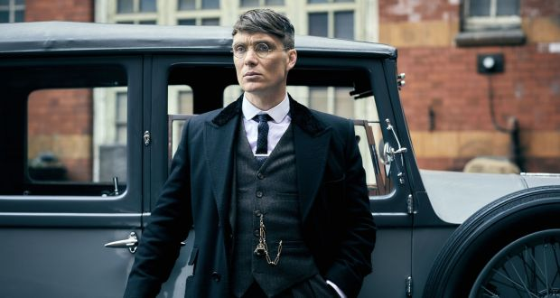
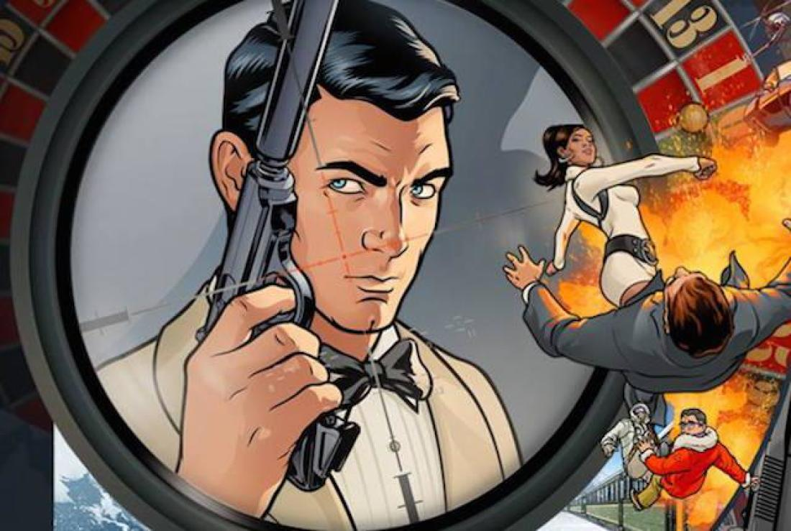
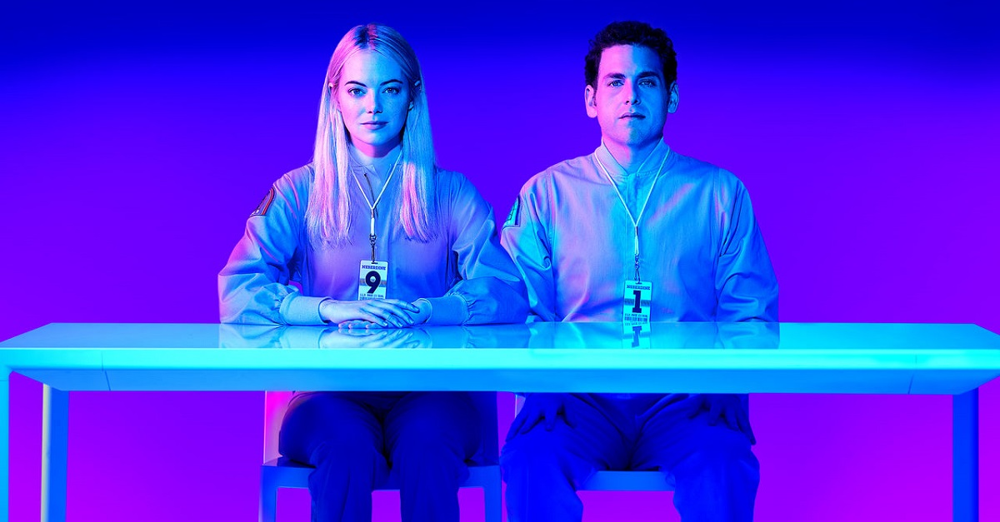
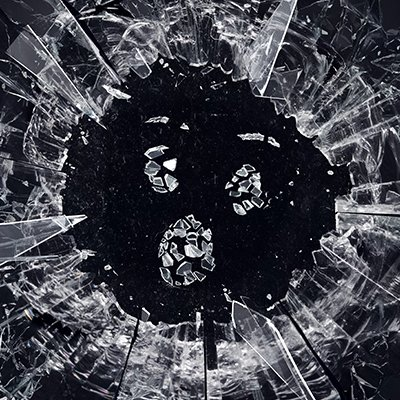
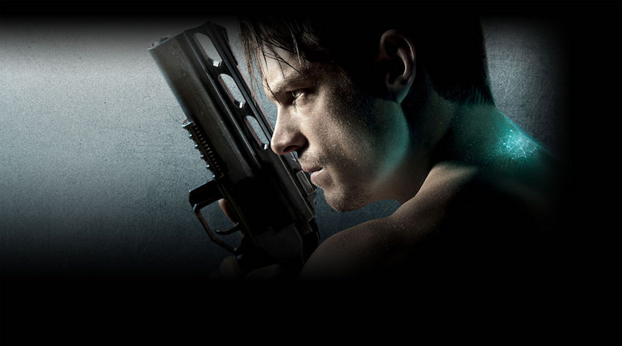
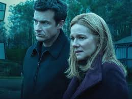
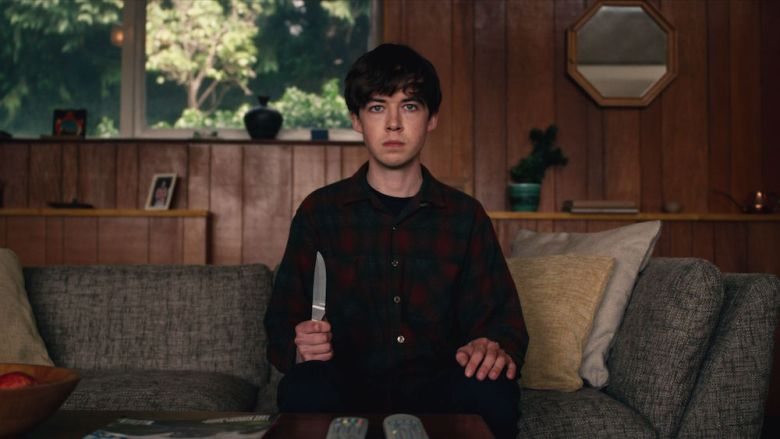
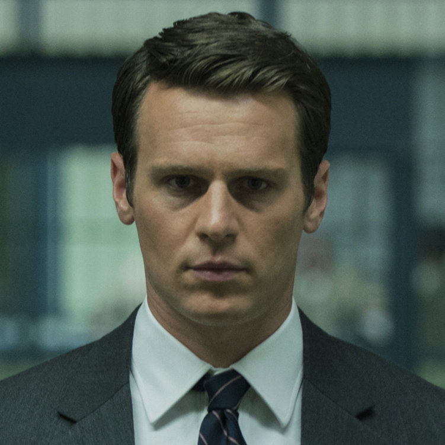

Finding a good TV show these days is not necessary an easy task. Especially not if you are choosy like me. Most TV shows you find on Netflix, HBO and other streaming services is at best average. Thats why I have written this article to help you find some hidden treasure among all this mediocrity of series. These are my personal favorites, which may have gotten under your radar.

Peaky Blinders

In this British gangster-drama from the 1920's we follow the Shelby family on the rise to the top of the criminal food chain. The main charachter, Thomas Shelby, is a war hero after WWI. But he is also the ruthless leader of Peaky Blinders, and will not hesitate to beat up or murder anyone between him and his goals. The show is available on Netflix.
Archer

If you consider animations to be childish, think again. Archer is a hilarious adult animation about a secret spy agency, ISIS. Archer is said to be the worlds greatest secret agent, but he is also an obnoxious alcoholic. A great variety of character and high rate of jokes per minute makes this show increadibly funny and easy to watch. The episodes are only 20 minutes long, and you can find most of the seasons available on Netflix.
Maniac

This fall Netflix dropped the American adaption of Espen P.A Lervaags Norwegian show Maniac. Netflix' version is slightly different, and is a dystopian futuristic psychological mindfuck. Jonah Hill and Emma Stone is the lead actors for this 10-episode drama, where both of our main characters is test subjects in an experiment to cure all mental health problems. The show is higly original, and will make you laugh, cry and also confuse you.
Black Mirror

First, let me say this is a heavy show. You might find yourself having an existential crisis after watching each episode, and to let the message in each episode really sink in on you, I don't recommend binging this show. An episode or two at the time is more than enough. Each episode has an entirely new plot and story, and there is no connection between the episode. Each episode can be considered as a short movie. What every episode have in common is that they shed light on what challenges humanity might face at technology continues to evolve. The consequences of the technology is put on the tip in each episode to amplify their message, but many of the episodes still experienced as highly realistic. I dont want to spoil to much, but let me say this show draws an dystopian image of the future, and don't always expect a happy ending.
Altered Carbon

Set in a future where consciousness is digitized and stored, a prisoner returns to life in a new body and must solve a mind-bending murder to win his freedom.
Ozark

A financial adviser drags his family from Chicago to the Missouri Ozarks, where he must launder $500 million in five years to appease a drug boss.
The End of The F***ing World

James is 17 and is pretty sure he is a psychopath. Alyssa, also 17, is the cool and moody new girl at school. The pair make a connection and she persuades him to embark on a road trip in search of her real father.
Mindhunter

Based on events in the late 1970s, two FBI agents are tasked with interviewing serial killers to solve open cases.